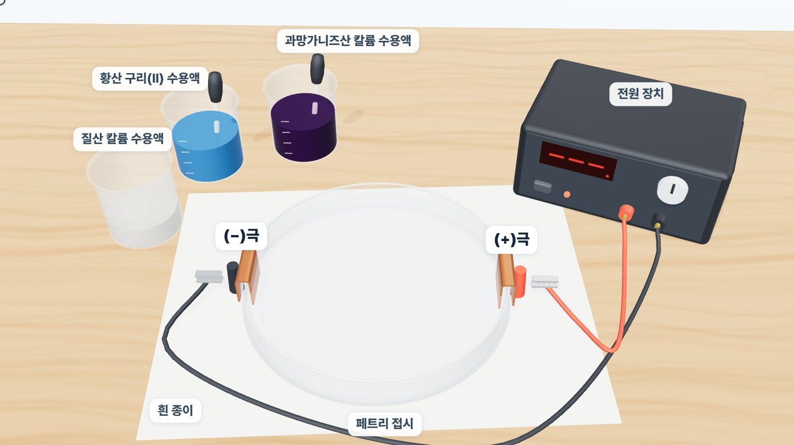

앞 시간에 원자에서 전자가 이동하여 만들어진 전하를 띤 입자를 이라고 배웠어요. 소금물처럼 이온이 들어 있는 수용액에 전류를 흘려 주면 이온은 어떻게 될까요? 색깔이 있는 이온을 이용하면 이온이 움직이는 모습을 눈으로 볼 수 있어요.

목표
- 이온의 이동을 관찰하여 이온이 전하를 띠고 있음을 확인할 수 있다.
준비물
- 황산 구리(Ⅱ) 수용액, 과망가니즈산 칼륨 수용액, 질산 칼륨 수용액
- 비커 3개, 스포이트 3개, 페트리 접시 2개, 흰 종이
- 금속판 2개, 전원 장치, 집게 달린 전선 2개
- 보안경, 실험용 장갑, 실험복
활동하기
- 1페트리 접시를 흰 종이 위에 올리고 양 끝에 금속판을 구부려 끼운다.
- 2페트리 접시에 질산 칼륨 수용액을 넣은 뒤 집게 달린 전선으로 금속판과 를 연결한 후 전류를 흘려 준다.
- 3페트리 접시 가운데에 황산 구리(Ⅱ) 수용액을 한 방울 떨어뜨리고 변화를 관찰한다.
- 4과망가니즈산 칼륨 수용액으로 과정 1~2를 반복한다.
안전 · 세 수용액은 냄새를 맡거나 피부에 닿지 않도록 조심해요. 사용한 시약은 폐수통에 모아 처리해요. 감전의 위험이 있으므로 전선이나 금속판은 맨손으로 만지면 안 돼요.
그림 ① 전기력을 이용한 이온의 이동 관찰 장치 (156쪽 탐구, 새로 그린 3D 그림)